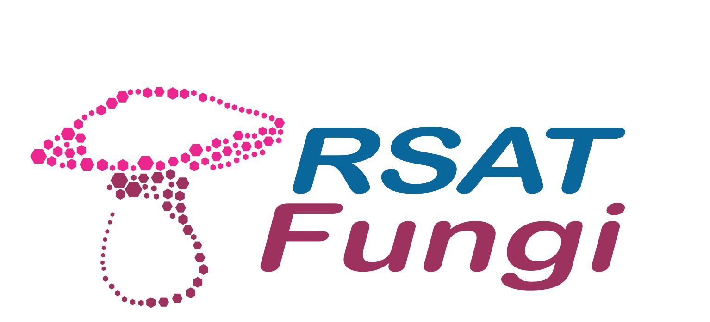
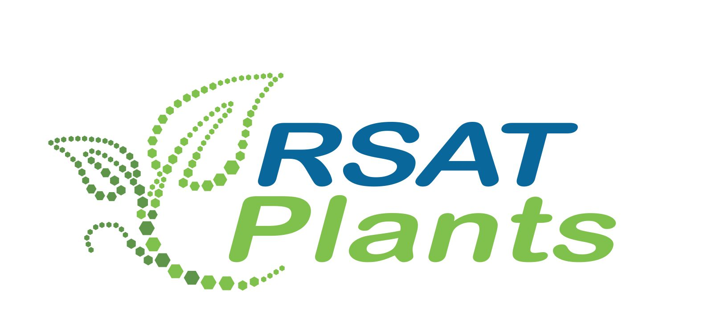

Regulatory Sequence Analysis Tools
This web site provides a series of modular computer programs specifically designed for the detection of regulatory signals in non-coding sequences.RSAT servers have been up and running since 1997. The project was initiated by Jacques van Helden, and is now pursued by the RSAT team.
Choose a server

maintained by TAGC - Université Aix Marseilles, France
maintained by RegulonDB - UNAM, Cuernavaca, Mexico
maintained by platforme ABIMS Roscoff, France
maintained by Ecole Normale Supérieure Paris, France
maintained by Bruno Contreras Moreira, Spain
maintained by TAGC - Université Aix Marseilles, France
RSAT logos designed by Mauricio Guzman (http://www.altamirastudio.com.mx/)